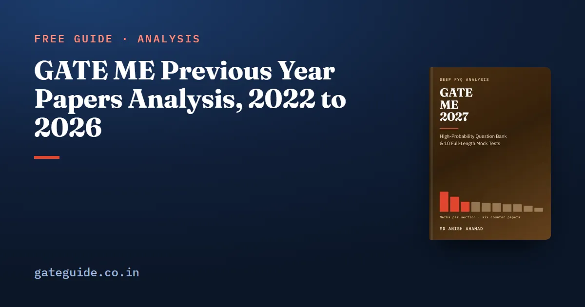

GATE ME Previous Year Papers Analysis, 2022 to 2026

The six GATE ME papers from 2022 to 2026 share one frame: 65 questions, 100 marks, 15 for General Aptitude and 13 for Engineering Mathematics. Inside that frame, each paper drew its own shape. This guide reads them one at a time, in order, and says what changed from each paper to the next, so you know what a "typical" ME paper does and does not look like.
In this guide
Key takeaways
- The six counted papers are 2022 Set 1 and Set 2 (IIT Kharagpur), 2023 (IIT Kanpur), 2024 (IISc Bengaluru), 2025 (IIT Roorkee) and 2026 (IIT Guwahati).
- Every paper had 30 one-mark and 35 two-mark questions, and the same block layout.
- Materials, Manufacturing and Metrology was the largest technical subject in all six.
- The 2023 paper was the outlier, differing from every other by 30 marks or more.
- MSQs fell from 8 in 2023 to none in 2026; NATs stayed between 20 and 26.
- Read each paper as one draw from a range, not as the template for 2027.
How to compare two papers
You need one measure before reading the papers. The paper distance used here takes each technical subject's marks in two papers, finds the gap, ignores the sign, and adds the gaps. It is out of 85, the technical marks.
| Paper | Distance from the previous paper |
|---|---|
| 2022 S2 | 4 from 2022 S1 |
| 2023 | 30 from 2022 S2 |
| 2024 | 34 from 2023 |
| 2025 | 20 from 2024 |
| 2026 | 24 from 2025 |
Worked example: 2025 against 2026
Engineering Mechanics went 2 to 6 (gap 4). Mechanics of Materials 7 to 8 (1). Theory of Machines 8 to 7 (1). Machine Design 5 to 3 (2). Fluid Mechanics 8 to 6 (2). Heat Transfer 5 to 8 (3). Thermodynamics 11 to 10 (1). Materials, Manufacturing and Metrology 20 to 14 (6). Industrial Engineering 6 to 10 (4). Engineering Mathematics stayed at 13 (0).
Remember: Two papers from different years differed by 4 to 36 marks out of 85. Your paper will differ from the last one by something in that range.
2022 Set 1 and Set 2: one institute, two sets
IIT Kharagpur set both 2022 sets; the keys record Session 7 for Set 1 and Session 8 for Set 2. Both had 35 MCQs, 6 MSQs and 24 NATs. They differ by only 4 marks: Engineering Mechanics 8 against 6, and Materials, Manufacturing and Metrology 15 against 17. Every other subject was identical.
Set 1 is a useful first paper to sit early in preparation, timed, before you have learned much. It shows the shape of the paper. The book averages the two sets before taking any mean, so 2022 does not count twice.
2023: the paper that moved three subjects at once
IIT Kanpur's 2023 paper is the one to remember. It gave Mechanics of Materials 15 marks, against 6 in both 2022 sets. It gave Theory of Machines and Vibrations and Industrial Engineering 2 marks each, against 8. Materials, Manufacturing and Metrology reached 21, its highest.
It also set the most MSQs in the record, 8, with 32 MCQs and 25 NATs. One two-mark NAT, 2023 (Q55) on additive manufacturing build time, was awarded marks to all in the official key.
Trap: Treating 2023 as the new normal or as noise. It is a real paper, and a paper shaped like it is possible again. Sit it as a stress test, not as a benchmark.
2024: back to the 2022 shape
IISc Bengaluru's 2024 paper looked much like 2022. It sits only 4 marks from 2022 S2 and 6 from 2022 S1. Heat Transfer reached 9, its highest, and Mechanics of Materials fell back to 6.
The format moved instead. MSQs fell to 2, and every one of the 25 one-mark technical questions was an MCQ. The mix was 39 MCQs, 2 MSQs and 24 NATs. The 2024 key is labelled the final answer key, and five questions were awarded marks to all, including (Q19) on laminar pipe-flow heat transfer and (Q63) on arc heat lost in welding. The file name "ME24S2" refers to the session, not a second set; 2024 had one ME paper.
2025: thermal up, mechanics down
IIT Roorkee's 2025 paper gave Engineering Mechanics just 2 marks, the lowest any paper gave it, and Heat Transfer 5, also its lowest. Thermodynamics and Applications rose to 11, and Materials, Manufacturing and Metrology carried 20, with casting and forming 5 marks each.
It set the most NATs in the record, 26, with 38 MCQs and a single MSQ. Turbomachinery appeared in 2025 and again in 2026, counted under Thermodynamics and Applications where the syllabus lists it.
2026: industrial engineering's highest
IIT Guwahati's 2026 paper gave Industrial Engineering 10 marks, its highest, and Materials, Manufacturing and Metrology 14, its lowest, though still the largest technical subject. Thermodynamics and Applications carried 10.
The format reached its far end: 45 MCQs, no MSQs and 20 NATs. All 35 technical MCQs had (A) as their key, which says nothing about 2027. One two-mark question, 2026 (Q45) on the topological validity of a solid by Euler's law, sits at the edge of the 2027 syllabus.
In one line: Every paper kept the frame and redrew the inside; 2023 redrew it most.
What the six papers say together
Read in sequence, the papers show a fixed frame and a moving interior. The organisers were five different institutes, and none was IIT Madras, which sets 2027; the guide to IIT Madras as organiser explains why that matters. The question-type rules are common to every paper, as the marking scheme guide, written for CSE but valid for ME, states.
How to use them: sit 2022 S1 early, hold 2025 and 2026 back for full timed attempts, and sit 2023 as a stress test. Practise the NATs on the GATE virtual calculator, and plan backwards from your date on the GATE 2027 dates page.
The book counts every question of all six papers, with each one cited by paper and number and placed on the 2027 syllabus, in the GATE ME 2027 book.
Quick revision
- Six papers: 2022 S1 and S2 (IIT Kharagpur), 2023 (IIT Kanpur), 2024 (IISc), 2025 (IIT Roorkee), 2026 (IIT Guwahati).
- Fixed frame: 65 questions, 100 marks, aptitude 15, maths 13.
- 2022 sets differed by 4 marks; 2023 differed from every paper by 30 or more.
- 2023: Mechanics of Materials 15; Theory of Machines and Industrial Engineering 2 each.
- 2025: Engineering Mechanics 2; NATs 26.
- 2026: Industrial Engineering 10; MSQs 0; manufacturing 14.
- Sit 2022 S1 early, 2023 as a stress test, and 2025 and 2026 last.
Frequently asked questions
How was the GATE ME 2026 paper?
Set under IIT Guwahati, it had 45 MCQs, no MSQs and 20 NATs. Materials, Manufacturing and Metrology carried 14 marks, its lowest in the six counted papers, while Industrial Engineering carried 10, its highest, and Thermodynamics and Applications 10. Engineering Mathematics was 13 and General Aptitude 15, as in every paper.
Which GATE ME paper was the most unusual from 2022 to 2026?
The 2023 paper, set under IIT Kanpur. It gave Mechanics of Materials 15 marks against 6 to 8 in the other five, and Theory of Machines and Vibrations and Industrial Engineering 2 marks each. Measured subject by subject, it differs from every other counted paper by 30 marks or more out of 85.
Where can I download GATE ME previous year papers?
The official question papers and keys are on the organising institutes' portals. The GATE 2026 portal of IIT Guwahati hosts the 2026 paper and an archive of earlier ones, including 2022 to 2024, and the GATE 2025 portal of IIT Roorkee hosts the 2025 paper and key. Prefer the organisers' own files to retyped copies.
How many GATE ME papers should I analyse?
The book counts all six from 2022 to 2026: both 2022 sets and one paper a year since. That is 390 questions and 600 marks. Six papers in five years show patterns, such as which topics recur and the fixed 28 marks of aptitude and maths, but they are too few to show trends.
Sources
- GATE 2027 official website (IIT Madras)
- GATE 2026 ME question paper (IIT Guwahati)
- GATE 2025 ME question paper (IIT Roorkee)
- GATE 2022 ME question papers, both sets (archive on the GATE 2026 portal)
Dates, fees and the syllabus are set by the GATE 2027 organising institute and can change. Always confirm at gate2027.iitm.ac.in.